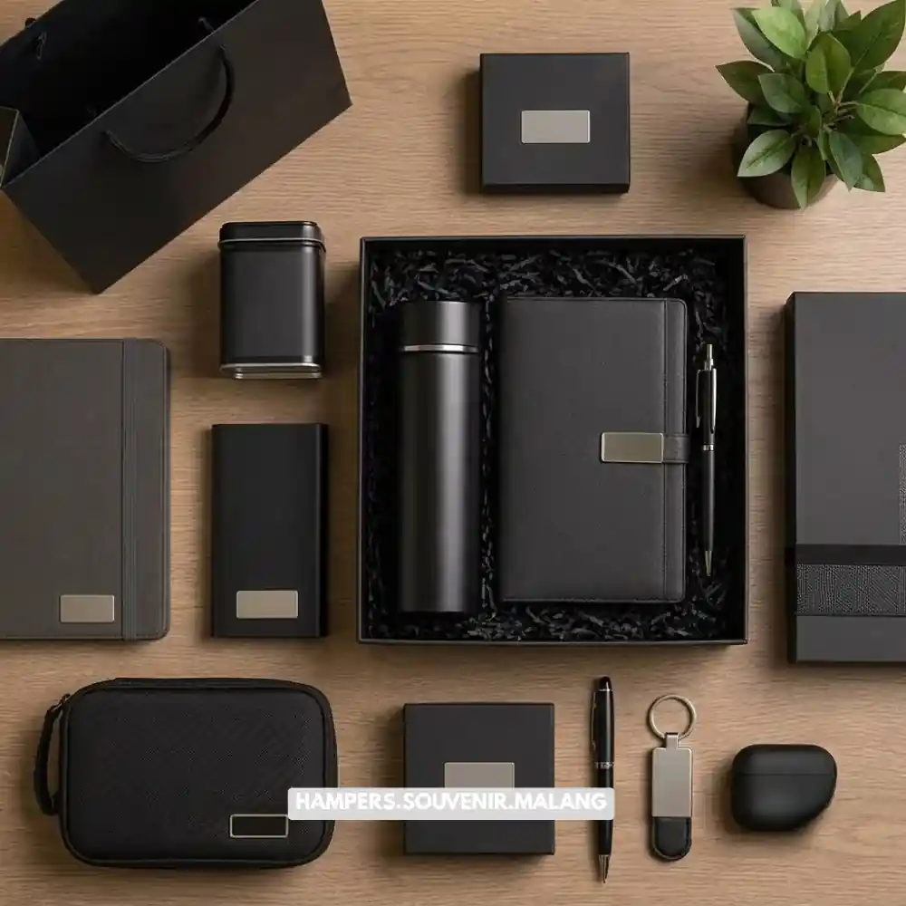

Paket hampers kantor Malang adalah solusi bingkisan korporat yang dirancang khusus untuk kebutuhan bisnis, mulai dari penyambutan klien, hadiah akhir tahun, hingga apresiasi karyawan.
Perusahaan di Malang umumnya memesan hampers ini untuk menjaga hubungan profesional sekaligus memperkuat citra merek melalui kemasan yang rapi dan berkualitas. Anda dapat memesan paket ini secara langsung, cepat, dan disesuaikan dengan identitas perusahaan melalui HampersMalang.web.id.
- Paket hampers kantor Malang cocok untuk hadiah klien, mitra bisnis, dan karyawan.
- Tersedia berbagai isi, mulai dari makanan premium hingga merchandise korporat.
- Kemasan dapat disesuaikan dengan warna dan logo perusahaan.
- Proses pemesanan dalam jumlah besar dapat dilakukan tanpa antre panjang.
- HampersMalang.web.id melayani pengiriman cepat ke area Malang dan sekitarnya.
Apa Itu Paket Hampers Kantor dan Mengapa Perusahaan Membutuhkannya
Hampers kantor adalah bingkisan resmi berisi produk pilihan yang mewakili citra perusahaan, digunakan untuk mempererat relasi bisnis secara profesional dan berkesan.
Bingkisan ini berbeda dari parcel biasa karena disusun dengan mempertimbangkan nilai jual perusahaan, bukan sekadar isi produk. Sebuah hampers kantor yang baik mencerminkan keseriusan dan perhatian perusahaan terhadap penerimanya, baik itu klien besar, mitra strategis, maupun karyawan internal.
Sejumlah instansi di Malang menggunakan hampers sebagai elemen dalam strategi komunikasi bisnis tahunan, terutama menjelang momen-momen penting seperti pergantian tahun, ulang tahun perusahaan, atau perayaan keberhasilan proyek.
Kebutuhan ini semakin meningkat karena perusahaan modern menyadari bahwa hadiah korporat yang tepat dapat meningkatkan loyalitas mitra dan menciptakan kesan profesional yang bertahan lama. Berdasarkan data pemesanan internal HampersMalang.web.id sepanjang 2025, permintaan hampers korporat meningkat signifikan pada kuartal keempat setiap tahunnya, seiring banyaknya perusahaan yang menyiapkan bingkisan penutup tahun untuk klien dan karyawan.
Baca Juga: Biaya Hampers Kantor Malang: Faktor yang Memengaruhi Harga
Siapa Saja yang Cocok Memesan Paket Hampers Kantor Ini
Paket hampers kantor cocok dipesan oleh perusahaan swasta, instansi pemerintah, kantor cabang, hingga pelaku usaha yang ingin membangun relasi bisnis secara elegan.
Divisi HRD dan sekretaris perusahaan biasanya menjadi pemesan utama untuk kebutuhan apresiasi karyawan dan penyambutan tamu penting. Tim marketing dan business development juga kerap memesan hampers untuk menjaga hubungan dengan klien lama maupun calon mitra baru.
Selain itu, instansi pemerintah dan lembaga pendidikan di Malang turut menggunakan hampers sebagai bentuk penghargaan resmi dalam acara seremonial. Pelaku usaha skala menengah pun semakin sering memanfaatkan hampers sebagai media promosi halus yang membawa nama perusahaan mereka.

Apa Saja Isi Paket Hampers Kantor yang Paling Diminati
Isi paket hampers kantor yang paling diminati meliputi makanan premium, minuman kemasan eksklusif, merchandise kantor, dan produk custom berlogo perusahaan.
Kombinasi isi hampers biasanya disesuaikan dengan anggaran dan tujuan pemberian. Untuk hampers klien, perusahaan cenderung memilih produk premium seperti cokelat kualitas tinggi, kopi kemasan eksklusif, atau makanan ringan kemasan elegan. Untuk hampers karyawan, isi yang lebih fungsional seperti alat tulis premium, tumbler, atau kombinasi makanan dan merchandise lebih sering dipilih.
Kemasan tetap menjadi elemen penting karena kesan pertama pada sebuah hampers sangat dipengaruhi oleh tampilan luar sebelum isi dibuka. Perusahaan yang ingin menonjolkan identitas mereka umumnya menambahkan elemen custom seperti kartu ucapan, pita berwarna korporat, atau label bermerek pada kemasan. Layanan kustomisasi ini tersedia lengkap di HampersMalang.web.id sehingga Anda tidak perlu repot mengurus detail kecil secara terpisah.
Baca Juga: Cara Memilih Hampers Kantor untuk Karyawan dan Klien
Bagaimana Cara Memilih Paket Hampers Kantor yang Tepat di Malang
Cara memilih paket hampers kantor yang tepat adalah menyesuaikan isi dengan tujuan pemberian, anggaran perusahaan, serta kesesuaian citra merek yang ingin ditampilkan.
Langkah pertama adalah menentukan tujuan pemberian, apakah untuk klien, mitra, atau karyawan internal, karena setiap kategori memiliki preferensi isi yang berbeda. Selanjutnya, tetapkan anggaran per unit agar jumlah pesanan dapat direncanakan dengan matang, terutama untuk pemesanan dalam skala besar. Pertimbangkan pula tema dan warna kemasan agar selaras dengan identitas visual perusahaan Anda.
Faktor lain yang juga memiliki peranan penting adalah waktu pemesanan. Untuk momen tertentu seperti akhir tahun atau hari besar keagamaan, sebaiknya pesanan dilakukan lebih awal agar proses produksi dan pengemasan berjalan optimal. Tim HampersMalang.web.id siap membantu Anda menentukan kombinasi isi yang paling sesuai melalui konsultasi langsung sebelum pemesanan final dilakukan.
Berapa Kisaran Harga Paket Hampers Kantor di Malang
Harga paket hampers kantor di Malang bervariasi tergantung isi, jumlah pesanan, dan tingkat kustomisasi kemasan, mulai dari kelas ekonomis hingga premium eksklusif.
Secara umum, harga ditentukan oleh tiga faktor utama yaitu jenis produk di dalamnya, tingkat kerumitan kemasan, dan volume pemesanan. Paket dengan isi produk lokal dan kemasan sederhana biasanya berada di kisaran harga lebih terjangkau, sementara paket dengan produk impor atau kemasan custom premium berada di kelas harga lebih tinggi. Pemesanan dalam jumlah besar umumnya mendapatkan penyesuaian harga yang lebih efisien dibandingkan pemesanan satuan.
Berdasarkan informasi dari HampersMalang.web.id untuk periode 2025 sampai awal 2026, mayoritas perusahaan di Malang lebih memilih paket kelas menengah yang seimbang antara kualitas produk dan efisiensi anggaran tahunan. Untuk mengetahui estimasi harga sesuai kebutuhan spesifik perusahaan Anda, tim kami siap memberikan penawaran melalui konsultasi langsung di HampersMalang.web.id.
Apa Saja Kesalahan Umum saat Memesan Hampers Kantor
Kesalahan umum saat memesan hampers kantor meliputi pemesanan mendadak, isi yang tidak sesuai penerima, dan kemasan yang kurang mencerminkan citra perusahaan.
Banyak perusahaan baru menyadari kebutuhan hampers ketika momen sudah sangat dekat, sehingga pilihan isi dan kemasan menjadi terbatas. Kesalahan lain adalah menyamaratakan isi hampers untuk semua penerima tanpa mempertimbangkan posisi atau relasi bisnis, padahal klien besar dan karyawan internal idealnya mendapatkan kategori hampers yang berbeda.
Kemasan yang terlalu sederhana juga dapat mempengaruhi citra profesional, khususnya untuk hampers yang ditujukan bagi mitra strategis atau tamu penting perusahaan. Untuk menghindari hal ini, sebaiknya perencanaan hampers dilakukan minimal beberapa minggu sebelum momen pemberian, terutama untuk pesanan dengan jumlah besar atau tingkat kustomisasi tinggi.
Bagaimana Proses Pemesanan Hampers Kantor dalam Jumlah Besar
Proses pemesanan hampers kantor dalam jumlah besar dimulai dari konsultasi kebutuhan, penentuan isi dan kemasan, produksi, hingga pengiriman terjadwal ke alamat perusahaan.
Tahap awal adalah diskusi kebutuhan bersama tim HampersMalang.web.id untuk menentukan jumlah, anggaran, dan preferensi isi. Setelah kesepakatan tercapai, tim akan menyiapkan sampel atau mock up kemasan agar perusahaan dapat memastikan tampilan akhir sebelum produksi massal dilakukan. Proses produksi kemudian berjalan sesuai jadwal yang disepakati, dengan pengemasan rapi dan pengecekan kualitas pada setiap unit.
Tahap terakhir adalah pengiriman, yang dapat dijadwalkan langsung ke kantor Anda maupun didistribusikan ke beberapa alamat penerima sekaligus sesuai kebutuhan acara. Layanan ini dirancang agar tim internal perusahaan tidak perlu mengurus logistik secara manual.
Paket hampers kantor Malang bukan sekadar bingkisan, melainkan investasi kecil yang memberi dampak besar bagi hubungan bisnis dan loyalitas karyawan. Memilih isi yang tepat, kemasan yang mencerminkan citra perusahaan, dan waktu pemesanan yang matang akan membuat hampers Anda lebih berkesan. Jangan menunggu hingga mendekati tenggat waktu untuk mempersiapkan bingkisan korporat Anda. Segera konsultasikan kebutuhan hampers kantor perusahaan Anda bersama HampersMalang.web.id dan dapatkan paket yang elegan, profesional, serta siap kirim tepat waktu.
Tanya Jawab Seputar Paket Hampers Kantor
Paket hampers kantor adalah bingkisan korporat yang berisi produk pilihan untuk klien, mitra bisnis, atau karyawan, dikemas secara profesional untuk mewakili citra perusahaan.
Lama proses bergantung pada jumlah pesanan dan tingkat kustomisasi, sehingga sebaiknya pemesanan dilakukan beberapa minggu sebelum momen pemberian.
Ya, kemasan dapat disesuaikan dengan warna, label, dan elemen identitas perusahaan melalui layanan kustomisasi di HampersMalang.web.id.
Bisa, layanan ini mendukung pemesanan skala besar dengan proses produksi dan pengiriman yang terjadwal rapi.
Anda dapat menghubungi tim HampersMalang.web.id untuk konsultasi kebutuhan, memilih isi dan kemasan, lalu melanjutkan ke proses produksi dan pengiriman.

Butuh Paket Hampers Kantor?
Solusi Hampers & Corporate Gift Kreatif di Malang Raya.
Ditulis oleh Tim Maroon Souvenir
Sahabat mahasiswa dan pelaku bisnis di Malang Raya. Berpengalaman menangani merchandise event kampus, instansi pemerintahan, dan hotel berbintang di Batu.